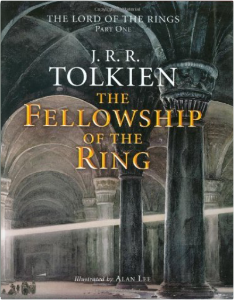
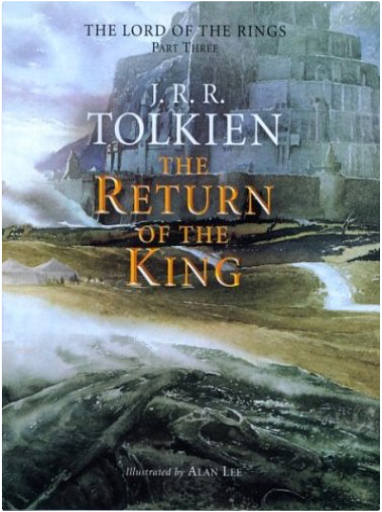
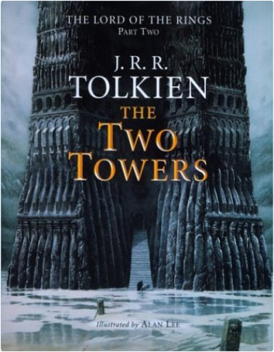

   The Lord of the Rings, J.R.R. Tolkien's three-volume epic, is set in the imaginary world of Middle-earth - home to many strange beings, and most notably hobbits, a peace-loving "little people," cheerful and shy. Since its original British publication in 1954-55, the saga has entranced readers of all ages. It is at once a classic myth and a modern fairy tale. Critic Michael Straight has hailed it as one of the "very few works of genius in recent literature." Middle-earth is a world receptive to poets, scholars, children, and all other people of good will. Donald Barr has described it as "a scrubbed morning world, and a ringing nightmare world...especially sunlit, and shadowed by perils very fundamental, of a peculiarly uncompounded darkness." The story of ths world is one of high and heroic adventure. Barr compared it to Beowulf, C.S. Lewis to Orlando Furioso, W.H. Auden to The Thirty-nine Steps. In fact the saga is sui generis - a triumph of imagination which springs to life within its own framework and on its own terms.  The standard harcover edition of the concluding volume of The Lord of the Rings includes a large format fold-out map and extensive appendices. As the Shadow of Mordor grows across the land, the Companions of the Ring have become involved in separate adventures. Aragorn, revealed as the hidden heir of the ancient Kings of the West, has joined with the Riders of Rohan against the forces of Isengard, and takes part in the desperate victory of the Hornburg. Merry and Pippin, captured by Orcs, escape into Fangorn Forest and there encounter the Ents. Gandalf has miraculously returned and defeated the evil wizard, Saruman. Sam has left his master for dead after a battle with the giant spider, Shelob; but Frodo is still alive — now in the foul hands of the Orcs. And all the while the armies of the Dark Lord are massing as the One Ring draws ever nearer to the Cracks of Doom.  The standard hardcover edition of the second volume of The Lord of the Rings includes a large format fold-out map. Frodo and his Companions of the Ring have been beset by danger during their quest to prevent the Ruling Ring from falling into the hands of the Dark Lord by destroying it in the Cracks of Doom. They have lost the wizard, Gandalf, in a battle in the Mines of Moria. And Boromir, seduced by the power of the Ring, tried to seize it by force. While Frodo and Sam made their escape, the rest of the company was attacked by Orcs. Now they continue the journey alone down the great River Anduin — alone, that is, save for the mysterious creeping figure that follows wherever they go. The Encyclopaedia Sherlockiana: Or, A Universal Dictionary of Sherlock Holmes and His Biographer John H. Watson, M.D.Jack Tracy sherlock holmes  "It is absolutely unique—without question the most fascinating Civil War novel I have ever read."  #1 NEW YORK TIMES BESTSELLER, NAMED BY THE TIMES AS ONE OF "6 BOOKS TO HELP UNDERSTAND TRUMP'S WIN"  Once Upon a Car is the fascinating epic story of the rise, fall, and rebirth of the Big Three U.S. automakers, General Motors, Ford, and Chrysler. Written by Bill Vlasic, the Detroit bureau chief for the New York Times and acclaimed author of Taken for a Ride, this eye-opening, richly anecdotal work is more than a riveting and insightful business history. It offers a clear-eyed view of the present day automobile industry and of Detroit, the city that spawned it, going far beyond the corporate and federal maneuverings to explore the impact the car companies’ failures have had on the overall economy, and more importantly what they have done to people’s lives. Relevant and thought-provoking, Once Upon a Car is an unforgettable journey deep inside this quintessentially American industry. |  In Breakfast of Champions, one of Kurt Vonnegut’s most beloved characters, the aging writer Kilgore Trout, finds to his horror that a Midwest car dealer is taking his fiction as truth. What follows is murderously funny satire, as Vonnegut looks at war, sex, racism, success, politics, and pollution in America and reminds us how to see the truth.  Eliot Rosewater—drunk, volunteer fireman, and President of the fabulously rich Rosewater Foundation—is about to attempt a noble experiment with human nature . . . with a little help from writer Kilgore Trout. God Bless You, Mr. Rosewater is Kurt Vonnegut’s funniest satire, an etched-in-acid portrayal of the greed, hypocrisy, and follies of the flesh we are all heir to.  Hocus Pocus is the fictional autobiography of a West Point graduate who was in charge of the humiliating evacuation of U.S. personnel from the Saigon rooftops at the close of the Vietnam War. Returning home from the war, he unknowingly fathered an illegitimate son. In 2001, the son begins a search for his father and catches up with him just in time to see him arrested for masterminding the prison break of 10,000 convicts. Using his famous brand of satire and wit, Vonnegut captures twenty-first century America as only he could foresee it. In Hocus Pocus, listeners will find a fresh novel, as fascinating and brilliantly offbeat as anything he's written.  The Sirens of Titan is an outrageous romp through space, time, and morality. The richest, most depraved man on Earth, Malachi Constant, is offered a chance to take a space journey to distant worlds with a beautiful woman at his side. Of course there’s a catch to the invitation–and a prophetic vision about the purpose of human life that only Vonnegut has the courage to tell.  Slaughterhouse-Five, an American classic, is one of the world’s great antiwar books. Centering on the infamous firebombing of Dresden, Billy Pilgrim’s odyssey through time reflects the mythic journey of our own fractured lives as we search for meaning in what we fear most.  Every short story in this wonderfully varied collection has in common some diversion in history, some alternate reality from what we know, resulting in a very different world. In addition to original stories specially commissioned from bestselling writers such as James Morrow, Stephen Baxter, and Ken MacLeod, there are genre classics from Kim Stanley Robinson, Harry Turtledove, and George Zebrowski: over 20 stories in all.  A Rulebook for Arguments is a succinct introduction to the art of writing and assessing arguments, organized around specific rules, each illustrated and explained soundly but briefly. This widely popular primer—translated into eight languages—remains the first choice in all disciplines for writers who seek straightforward guidance about how to assess arguments and how to cogently construct them. |

John's Library
Collection Total:
163 Items
163 Items
Last Updated:
Apr 7, 2017
Apr 7, 2017
 Made with Delicious Library
Made with Delicious Library